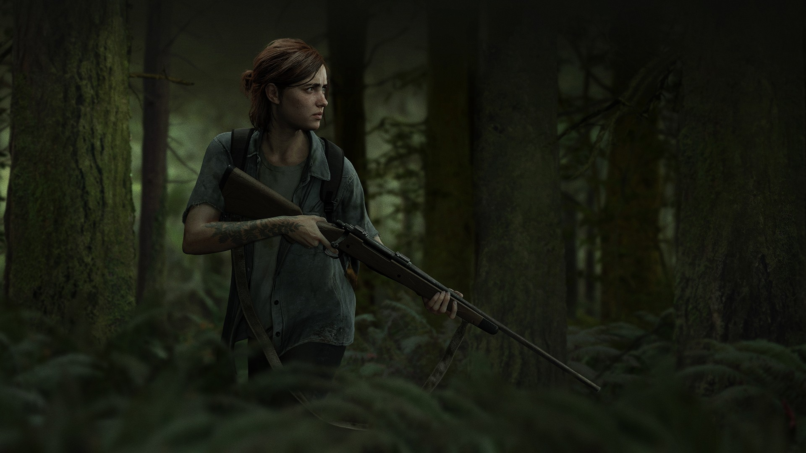
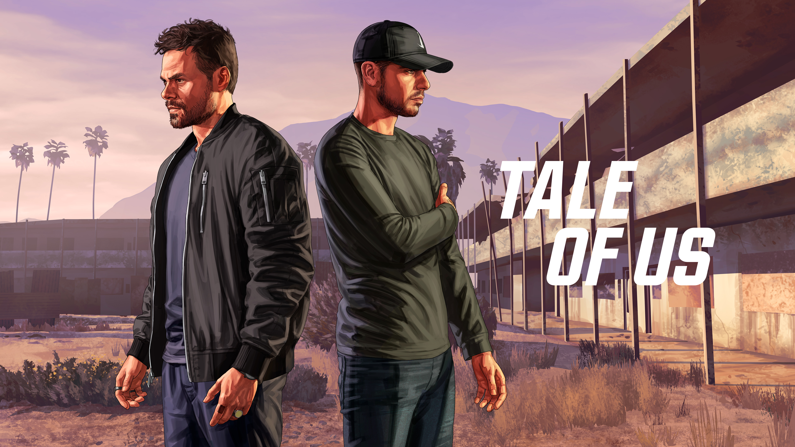
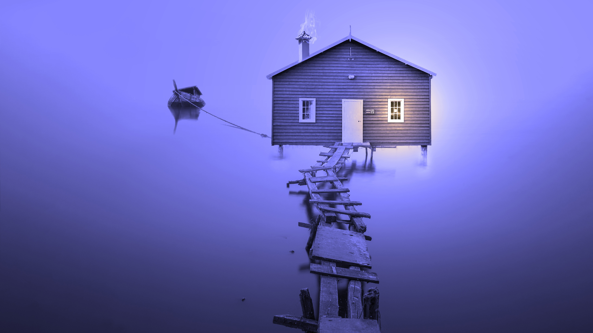
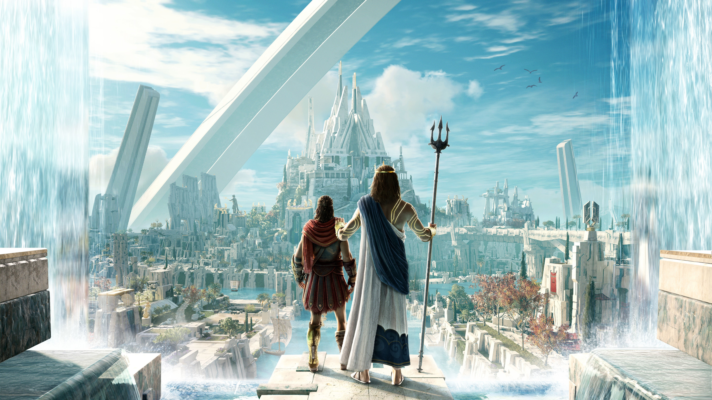
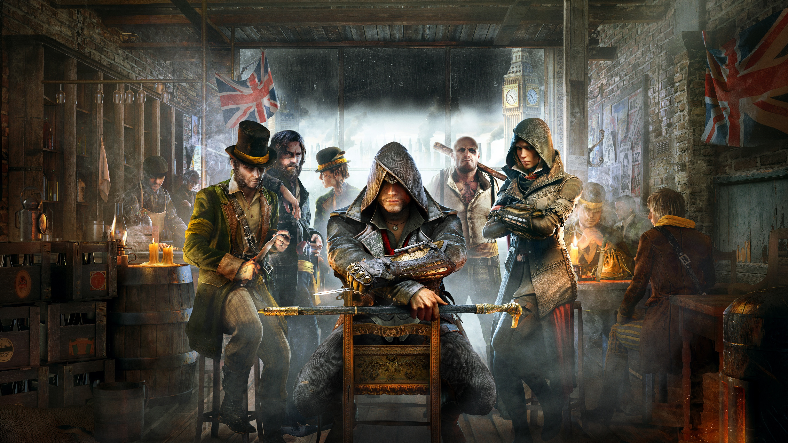
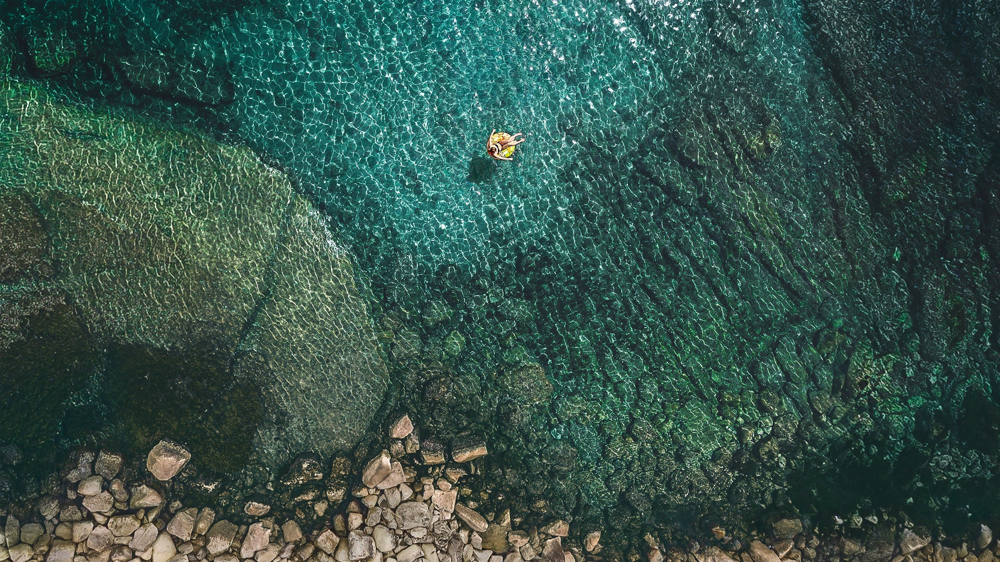
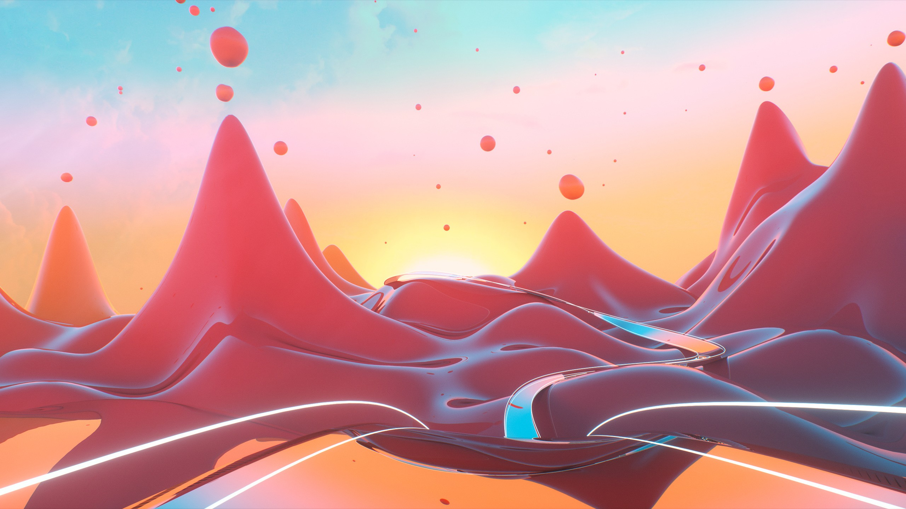

THIS SECTION DESCRIBES CSS FILTERS

The Last Of Us Part II
The Dropshadow filter
The Dropshadow filter
THIS SECTION DESCRIBES FILTER FUNCTIONS
This is the grayscale function.
This is the sepia function.
This is the saturate function.

This is the hue-rotate function.

This is the invert function.
THIS SECTION DESCRIBES OPACITY & BRIGHTNESS

This is the opacity function.
 This is the brightness function.
This is the brightness function.
This is the contrast function.

This is the blur function.
THIS SECTION DESCRIBES USING MULTIPLE CSS FILTERS
This is a filter combo.

This is a filter combo.
 This is a filter combo.
This is a filter combo.
This is a filter combo.

This is a filter combo.